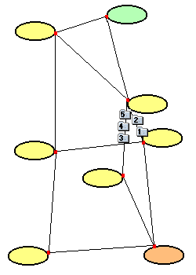
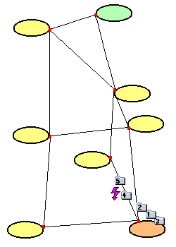
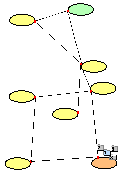
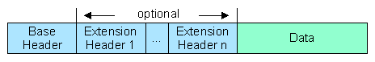
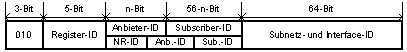
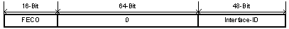
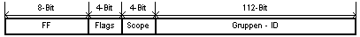
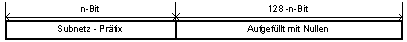
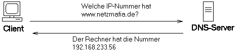

|
Grundlagen ComputernetzeProf. Jürgen Plate |
|
Grundlagen ComputernetzeProf. Jürgen Plate |
Die Schichten 5 - 7 des OSI-Standards werden hier in einer Anwendungsschicht zusammengefaßt, da die Anwendungsprogramme alle direkt mit der Transportschicht kommunizieren.
In Schicht 4 befindet sich außer TCP, welches gesicherten Datentransport (verbindungsorientiert, mit Flußkontrolle (d. h. Empfangsbestätigung, etc.) durch Windowing ermöglicht, auch UDP (User Datagram Protocol), in welchem verbindungsloser und ungesicherter Transport festgelegt ist. Beide Protokolle erlauben durch die Einführung von sogenannten Ports den Zugriff mehrerer Anwendungsprogramme gleichzeitig auf ein- und dieselbe Maschine.
In Schicht 3 ist das verbindungslose Internet-Protokoll (IP) angesiedelt.
Datenpakete werden auf den Weg geschickt, ohne daß auf eine
Empfangsbestätigung gewartet werden muß. IP-Pakete dürfen unter
bestimmten Bedingungen (TTL=0, siehe unten) sogar vernichtet werden.
In Schicht 3 werden damit auch die IP-Adressen festgelegt. Hier findet auch das Routing,
das heißt die Wegsteuerung eines Paketes von einem Netz ins andere
statt. Ebenfalls in diese Ebene integriert sind die ARP-Protokolle (ARP
- Address Resolution Protocol), die zur Auflösung (= Umwandlung) einer
logischen IP-Adresse in eine physikalische (z. B. Ethernet-) Adresse dienen
und dazu sogenannte Broadcasts (Datenpakete, durch die alle angeschloßenen
Stationen angesprochen werden) verwenden. ICMP, ein Protokoll, welches den
Austausch von Kontroll- und Fehlerpaketen im Netz ermöglicht, ist ebenfalls
in dieser Schicht realisiert.
Die Schichten 1 und 2 sind gegenüber Schicht 3 protokolltransparent. Sie können durch standardisierte Protokolle (z. B. Ethernet (CSMA/CD), FDDI, SLIP (Serial Line IP), PPP (Point-to-Point Protocol)) oder andere Übertragungsverfahren realisiert werden.
Zur TCP/IP-Familie gehören mehrere Dienstprogramme der höheren
OSI-Schichten (5 - 7), z. B.:
| Internet-Protokolle | ||||||||
|---|---|---|---|---|---|---|---|---|
| OSI-Schicht | Internet Protokoll Suite | DOD Schicht | ||||||
| 7 | Anwendung | File Transfer | Electronic |
Terminal Emulation | Usenet News | World Wide Web | Domain Name Service | Art der Kommuni- kation |
| 6 | Darstellung | File Transfer Protocol (FTP) RFC 959 |
Simple Mail Transfer Protocol (SMTP) RFC 821 |
Telnet Protocol (Telnet) RFC 854 |
Usenet News Transfer Protocol (NNTP) RFC 977 |
Hypertext Transfer Protocol (HTTP) RFC 2616 |
Domain Name Service (DNS) RFC 1034 |
Applikation |
| 5 | Sitzung | |||||||
| 4 | Transport | Transmission Control Protocol (TCP) RFC 793 |
User Datagram Protocol (UDP) RFC 768 |
Host to Host Kommunikation | ||||
| 3 | Netzwerk | Address Resolution Protocol (ARP) RFC 826 |
Internet Protocol (IP) RFC 791 |
Internet Control Messsage Protocol RFC 792 |
Internet | |||
| 2 | Sicherung | Ethernet | Token Ring | DQDB | FDDI | ATM | lokales Netzwerk | |
| 1 | Physikalische Übertragung | Twisted Pair | Lichtwellenleiter | Coaxkabel | Funk | Laser | Netzzugriff | |
Es ist offensichtlich, daß die Gateways neben dem Routing weitere
nichttriviale Funktionen haben, wenn sie zwischen den unterschiedlichsten
Teilnetzen vermitteln (z. B. unterschiedliche Protokolle auf Ebene 2, unterschiedliche
Datenpaketgröße, usw.).
Aus diesem Grund existieren in einem Internet drei unabhängige Namens- bzw. Adressierungsebenen:
Die Ethernet-Adresse wurde bereits behandelt, auf die anderen beiden Ebenen wird in den folgenden Abschnitten eingegangen. Die Umsetzung der höchsten Ebene (Domain-Namen) in IP-Adressen erfolgt durch das oben erwähnte DNS, worauf die Dienstprogramme der Schichten 5-7 zurückgreifen.
Die Station A will Daten an eine Station B mit der Internetadresse I(B) senden, deren physikalische Adresse P(B) sie noch nicht kennt. Sie sendet einem ARP-Request an alle Stationen im Netz, der die eigene physikalische Adresse und die IP-Adresse von B enthält.
Alle Stationen erhalten und überprüfen den ARP-Request und die angesprochene Station B antwortet, indem sie einen ARP-Reply mit ihrer eigenen physikalischen Adresse an die Station A sendet. Letztere speichert die Zuordnung in einer Tabelle (Address Resolution Cache).

Auch für die Umkehrfunktion gibt es eine standardisierte Vorgehensweise,
den RARP (Reverse ARP). Hier sendet die Station A unter Angabe ihrer physikalischen
Adresse P(A) einen RARP-Request. Wenn im Netz nur eine Station als RARP-Server
eingerichtet ist (eine Station, die alle Zuordnungen von P(x) <-->
I(x) "kennt"), antwortet diese mit einem RARP-Reply an die anfragende
Station, der I(A) enthält. Diese Funktion ist z. B. für sogenannte
"Diskless Workstations" wichtig, die ihre gesamte Software von
einem Server laden.

IP ist ein verbindungsloses Protokoll. Es ist also nicht notwendig, eine
IP-Verbindung zu einem Rechner zu 'öffnen', bevor man Daten zu diesem Rechner
senden kann, sondern es genügt, das IP-Paket einfach abzusenden und darauf zu
vertrauen, daß es schon ankommen wird. Bei einem verbindungsorientierten
Protokoll wird beim Öffnen einer Verbindung getestet, ob der Zielrechner
überhaupt erreichbar ist. Ein verbindungsloses Protokoll macht das nicht und
kann demnach auch nicht garantieren, daß ein Datenpaket überhaupt beim
Empfänger ankommt. IP garantiert auch nicht, daß von einem einmal
abgeschickten Datenpaket nur eine Kopie beim Empfänger ankommt oder daß
in einer bestimmten Reihenfolge abgeschickte Datenpakete auch wieder in dieser
Reihenfolge empfangen werden.
Normalerweise laufen die IP-Pakete über mehrere Zwischenstationen, bis sie
am Zielrechner ankommen. Bricht irgendwann während der Übertragung ein
Übertragungsweg zusammen, so wird ein neuer Weg zum Ziel gesucht und benutzt.
Da der neue Weg zeitlich länger oder kürzer sein kann als der alte, kann
man keine allgemeingültigen Aussagen darüber machen, in welcher Reihenfolge
IP-Pakete beim Empfänger eintreffen. Es kann auch sein, daß bei dieser
Umschalterei IP-Pakete verlorengehen oder sich verdoppeln. Das Beheben der so
entstehenden Probleme überläßt das IP-Protokoll anderen,
höherliegenden Schichten.
Das Internet-Protokoll ist somit ein verbindungsloser Dienst mit einem 'Unreliable Datagram Service', d. h. es wird auf der IP-Ebene weder die Richtigkeit der der Daten noch die Einhaltung von Sequenz, Vollständigkeit und Eindeutigkeit der Datagramme überprüft. Ein zuverlässiger verbindungsorientierter Dienst wird in der darüberliegenden TCP-Ebene realisiert.
Ein IP-Datagramm besteht aus einem Header und einem nachfolgenden Datenblock,
der seinerseits dann z. B. in einem Ethernet-Frame "verpackt"
wird. Die maximale Datenlänge wird auf die maximale Rahmenlänge
des physikalischen Netzes abgestimmt. Da nicht ausgeschlossen werden kann,
daß ein Datagramm auf seinem Weg ein Teilnetz passieren muß,
dessen Rahmenlänge niedriger ist, müssen zum Weitertransport mehrere
(Teil-)Datagramme erzeugt werden. Dazu wird der Header im Wesentlichen repliziert
und die Daten in kleinere Blöcke unterteilt. Jedes Teil-Datagramm hat
also wieder einen Header. Diesen Vorgang nennt man Fragmentierung. Es handelt
sich um eine rein netztechnische Maßnahme, von der Quell- und Zielknoten
nichts wissen müssen. Es gibt natürlich auch eine umgekehrte Funktion,
"Reassembly", die kleine Datagramme wieder zu einem größeren
packt. Geht auf dem Übertragungsweg nur ein Fragment verloren, muß
das gesamte Datagramm wiederholt werden. Es gilt die Empfehlung, daß
Datagramme bis zu einer Länge von 576 Bytes unfragmentiert übertragen
werden sollten.
Die Hauptaufgabe von IP ist es also, die Unterschiede zwischen den verschiedenen, darunterliegenden Netzwerkschichten zu verbergen und eine einheitliche Sicht auf die verschiedensten Netztechniken zu präsentieren. So gibt es IP nicht nur in Netzen, sondern auch als SLIP (Serial Line IP) oder PPP (Point to Point Protocol) für Modem- oder ISDN-Verbindungen. Zur Vereinheitlichung gehören auch die Einführung eines einheitlichen Adressierungsschemas und eines Fragmentierungsmechanismus, der es ermöglicht, große Datenpakete durch Netze mit kleiner maximaler Paketgröße zu senden: Normalerweise existiert bei allen Netzwerken eine maximale Größe für ein Datenpaket. Im IP-Jargon nennt man diese Grenze die 'Maximum Transmisson Unit' (MTU). Natürlich ist diese Obergrenze je nach verwendeter Hardware bzw. Übertragungstechnik unterschiedlich. Die Internet-Schicht teilt IP-Pakete, die größer als die MTU des verwendeten Netzwerks sind, in kleinere Stücke, sogenannte Fragmente, auf. Der Zielrechner setzt diese Fragmente dann wieder zu vollständigen IP-Paketen zusammen, bevor er sie an die darüberliegenden Schichten weitergibt. Der Fragement Offset gibt an, an welcher Stelle in Bezug auf den IP-Datagramm-Anfang das Paket in das Datagramm einzuordnen ist. Aufgrund des Offset werden die Pakete in die richtige Reihenfolge gebracht. Dazu ein Beispiel:
Es soll ein TCP-Paket mit einer Länge von 250 Byte über IP versandt werden. Es wird angenommen, daß ein IP-Header eine Länge von 20 Byte hat und eine maximale Länge von 128 Byte pro Paket nicht überschritten werden darf Der Identifikator des Datagramms beträgt 43 und der Fragmentabstand wird in 8-Byte-Schritten gezählt. Das Datenfragment muß also durch 8 dividierbar sein.
Da alle Fragmente demselben Datagramm angehören, wird der Identifikator für alle
Fragmente beibehalten. Im ersten Fragment ist das Fragment Offset natürlich noch
Null, das MF-Bit jedoch auf 1 gesetzt, um zu zeigen, daß noch Fragmente
folgen. Im IP-Header des zweiten Fragments beträgt das Fragment Offset 13
(104/8 = 13) und zeigt die Position des Fragments im Datagramm an. Das MF-Bit ist
noch immer 1, da noch ein Datenpaket folgt. Der Header des dritten Fragments
enthält dann ein MF-Bit mit dem Wert 0, denn es handelt sich um das letzte
Datenpaket zum Datagramm 43. Das Fragment Offset ist auf 26 gesetzt, da vorher schon
208 Daten-Bytes (8 * 26 = 208) übertragen wurden.
Sobald das erste Fragment (gleich welches) im Empfänger ankommt,
wird ein Timer gesetzt. Sind innerhalb der dort gesetzten Zeit nicht alle Pakete zu einem
Datagramm eingetroffen, wird angenommen, daß Fragmente verlorengingen. Der
Empfänger verwirft dann alle Datenpakete mit diesem Identifikator.
Was geschieht aber, wenn der Kommunikationspartner nicht erreichbar ist? Wie schon erwähnt, durchläuft ein Datagramm mehrere Stationen. Diese Stationen sind in der Regel Router oder Rechner, die gleichzeitig als Router arbeiten. Ohne Gegenmaßnahme würde das Datenpaket für alle Zeiten durch das Netze der Netze irren. Dazu gibt es im IP-Header neben anderer Verwaltungsinfo auch ein Feld mit dem Namen TTL (Time To Live). Der Wert von TTL kann zwischen 0 und 255 liegen. Jeder Router, der das Datagramm transportiert, vermindert den Wert dieses Feldes um 1. Ist der Wert von TTL bei Null angelangt, wird das Datagramm vernichtet.
Die Adressen, die im Internet verwendet werden, bestehen aus einer 32 Bit langen Zahl. Damit sich die Zahl leichter darstellen läßt, unterteilt man sie in 4 Bytes (zu je 8 Bit). Diese Bytes werden dezimal notiert und durch Punkte getrennt (a.b.c.d). Zum Beispiel:
141.84.101.2
129.187.10.25
Bei dieser Adresse werden zwei Teile unterscheiden, die Netzwerkadresse und die
Rechneradresse, wobei unterschiedlich viele Bytes für beide Adressen verwendet
werden:
| Klasse A - Netz | Klasse B - Netz | Klasse C - Netz | |
| Netz-ID | 8 Bit = 1 Byte | 16 Bit = 2 Byte | 24 Bit = 3 Byte |
| Host-ID | 24 Bit = 3 Byte | 16 Bit = 2 Byte | 8 Bit = 1 Byte |
| Netzmaske | 255.0.0.0 | 255.255.0.0 | 255.255.255.0 |
| Adressklassen-ID (= Feste Bits im 1. Byte, 1. Quad) |
0 | 10 | 110 |
| Wertebereich (theoretisch) | 0.0.0.0 bis 127.255.255.255 | 128.0.0.0 bis 191.255.255.255 | 192.0.0.0 bis 223.255.255.255 |
| Anzahl der Netze | 128 (= 27) | 16384 (= 26*256 = 64*256) |
2097152 (= 25*256*256 = 32*256*256) |
| Anzahl der Rechner im Netz |
16777216 (= 2563) | 65536 (= 2562) | 256 (= 2561) |
| Klasse D | Klasse E | |
| Adressklassen-ID | 4 Bit = "1110" | 5 Bit = "11110" |
| keine Netz-ID, sondern: | 28 Bit-Identifikator | 27 Bit-Identifikator |
| Wertebereich | 224.0.0.0 bis 239.255.255.255 | 240.0.0.0 bis 247.255.255.255 |
| Anwendungen | für Multicast-Gruppen | reservierte Adressen für Zukünftiges |
Grundsätzlich gilt:
Die Netzwerkadresse 127.0.0.1 bezeichnet jeweils den lokalen Rechner (loopback address). Sie dient der Konsistenz der Netzwerksoftware (jeder Rechner ist über seine Adresse ansprechbar) und dem Test.
Damit man nun lokale Netze ohne Internetanbindung mit TCP/IP betreiben kann, ohne IP-Nummern beantragen zu müssen und um auch einzelne Rechnerverbindungen testen zu können, gibt es einen ausgesuchten Nummernkreis, der von keinem Router nach außen gegeben wird. Diese "privaten" Adressen sind im RFC 1597 festgelegt. Es gibt ein Class-A-Netz, 16 Class-B-Netze und 255 Class-C-Netze:
Der für IP reservierte Adressraum reicht nicht mehr aus, um alle Endgeräte anzusteuern. Mögliche Abhilfen:
IP Masquerading rückt mit dieser Funktionalität sehr nahe an Proxy- und Firewall-Lösungen heran, wobei ein Proxy explizit für ein Protokoll (z. B. HTTP) existieren und aufgerufen werden muß.
| Adreß-Klasse | Subnetzmaske (binär) | Subnetzmaske (dezimal) |
|---|---|---|
| Class A | 11111111.00000000.00000000.00000000 | 255.0.0.0 |
| Class B | 11111111.11111111.00000000.00000000 | 255.255.0.0 |
| Class C | 11111111.11111111.11111111.00000000 | 255.255.255.0 |
Eine Subnet-Maske für ein Netz der Klasse C lautet daher 255.255.255.0. Das bedeutet, daß die ersten drei Bytes die Netzadresse angeben und das vierte Byte die Rechner adressiert. Eine Subnetz-Maske mit dem Wert 255.255.0.0 würde folglich ein Netz der Klasse B angeben und für ein C-Netz steht die Maske 255.255.255.0.
| Netzwerk- anteil in Bit |
Hostanteil in Bit |
Subnetz- anzahl *) |
Hostanzahl **) | Subnetzmaske |
| 8 | 24 | 1 | 16777216 | 255.0.0.0 Klasse A |
| 9 | 23 | 2 | 128*65536 | 255.128.0.0 |
| 10 | 22 | 4 | 64*65536 | 255.192.0.0 |
| 11 | 21 | 8 | 32*65536 | 255.224.0.0 |
| 12 | 20 | 16 | 16*65536 | 255.240.0.0 |
| 13 | 19 | 32 | 8*65536 | 255.248.0.0 |
| 14 | 18 | 64 | 4*65536 | 255.252.0.0 |
| 15 | 17 | 128 | 2*65536 | 255.254.0.0 |
| 16 | 16 | 1 | 65536 | 255.255.0.0 Klasse B |
| 17 | 15 | 2 | 128*256 | 255.255.128.0 |
| 18 | 14 | 4 | 64*256 | 255.255.192.0 |
| 19 | 13 | 8 | 32*256 | 255.255.224.0 |
| 20 | 12 | 16 | 16*256 | 255.255.240.0 |
| 21 | 11 | 32 | 8*256 | 255.255.248.0 |
| 22 | 10 | 64 | 4*256 | 255.255.252.0 |
| 23 | 9 | 128 | 2*256 | 255.255.254.0 |
| 24 | 8 | 1 | 256 | 255.255.255.0 Klasse C |
| 25 | 7 | 2 | 128 | 255.255.255.128 |
| 26 | 6 | 4 | 64 | 255.255.255.192 |
| 27 | 5 | 8 | 32 | 255.255.255.224 |
| 28 | 4 | 16 | 16 | 255.255.255.240 |
| 29 | 3 | 32 | 8 | 255.255.255.248 |
| 30 | 2 | 64 | 4 | 255.255.255.252 |
**) Die Rechneranzahl verringert sich ebenfalls um zwei wegen Subnetz-Adresse
(alle Rechnerbits auf 0) und Broadcast-Adresse (alle Rechnerbits auf 1):
Ist der Hostanteil der IP-Adresse m Bits, dann erhält man
(2m) - 2 Hosts pro Subnetz.
Besitzt breispielsweise ein Unternehmen ein Netz der Klasse C, möchte man dieses vielleicht in zwei Segmente unterteilen, die voneinander getrennt sind. Der Broadcastverkehr des ersten Segments kann so das andere nicht beeinträchtigen. In diesem Fall kommt die Subnetz-Maske zum Einsatz, welche die Rechneradressen in zwei Bereiche gliedert. Sollen die Rechner in vier gleich große Subnetze mit je 64 Knoten eingeteilt werden, lautet die Subnetz-Maske 255.255.255.192. Es gilt die folgende Formel für das Maskier-Byte:
Bytewert = 256 - (Anzahl der Knoten in einem Segment)
Als das Subnetting erstmals standardisiert wurde, war es verboten die Subnetze zu nutzen, in denen alle Subnetzbits den Wert 0 oder 1 hatten (siehe Anmerkungen oben). Damit ergeben sich im Beispiel nur zwei Subnetze mit je 62 Hosts. Inzwischen beherrschen fast alle Systeme korrektes Subnetting ("classless" routing).
Allgemein ergibt sich für ein C-Netz folgende Aufstellung:
| Subnetzbits | Hostbits | mögliche Subnetze | Hostadressen | Subnetzmaske |
| 1 | 7 | 2 (0) | 126 (0) | 255.255.255.128 |
| 2 | 6 | 4 (2) | 62 | 255.255.255.192 |
| 3 | 5 | 8 (6) | 30 | 255.255.255.224 |
| 4 | 4 | 16 (14) | 14 | 255.255.255.240 |
| 5 | 3 | 32 (30) | 6 | 255.255.255.248 |
| 6 | 2 | 64 (62) | 2 | 255.255.255.252 |
| 7 | 1 | 128 | 0 | 255.255.255.254 |
| Subnetzbits | Hostbits | dezimal | |||||||
| Dezimale Wertigkeit des Bit | 128 | 64 | 32 | 16 | 8 | 4 | 2 | 1 | |
| erstes Subnetz | 0 | 0 | 0 | 0 | 0 | 0 | 0 | 0 | 0 |
| zweites Subnetz | 0 | 0 | 1 | 0 | 0 | 0 | 0 | 0 | 32 |
| drittes Subnetz | 0 | 1 | 0 | 0 | 0 | 0 | 0 | 0 | 64 |
| viertes Subnetz | 0 | 1 | 1 | 0 | 0 | 0 | 0 | 0 | 96 |
| fünftes Subnetz | 1 | 0 | 0 | 0 | 0 | 0 | 0 | 0 | 128 |
| sechstes Subnetz | 1 | 0 | 1 | 0 | 0 | 0 | 0 | 0 | 160 |
| siebtes Subnetz | 1 | 1 | 0 | 0 | 0 | 0 | 0 | 0 | 192 |
| achtes Subnetz | 1 | 1 | 1 | 0 | 0 | 0 | 0 | 0 | 224 |
Damit sind die acht zur Verfügung stehenden Subnetze bekannt:
192.168.0.0/27 192.168.0.32/27 192.168.0.64/27 192.168.0.96/27 192.168.0.128/27 192.168.0.160/27 192.168.0.192/27 192.168.0.224/27
Diese Subnetze können jetzt einzelnen Netzen zugeordnet werden. Die folgende Tabelle zeigt die Netz- und Broadcastadressen von jedem einzelnen Subnetz und die Rechneradressen.
| Subnetz | IP-Adressen (letztes Oktett) | ||
| Netz | Hosts | Broadcast | |
| erstes Subnetz | 0 | 1-30 | 31 |
| zweites Subnetz | 32 | 33-62 | 63 |
| drittes Subnetz | 64 | 65-94 | 95 |
| viertes Subnetz | 96 | 97-126 | 127 |
| fünftes Subnetz | 128 | 129-158 | 159 |
| sechstes Subnetz | 160 | 161-190 | 191 |
| siebtes Subnetz | 192 | 193-222 | 223 |
| achtes Subnetz | 224 | 225-254 | 255 |
Als kleine Hilfe gibt es hier noch einen Subnetz-Rechner als Javascript-Programm. Eingegeben wird eine IP-Netzadresse in CIDR-Form (Classless Inter-Domain Routing, z.B. 10.1.2.0/24). Nach dem Klick auf "Berechnen" erscheinen im unteren Feld die Werte der Netzadresse, der Subnet-Maske und der Bereich der zugehörigen IP-Adressen, wobei die erste Adresse des angebenen Bereichs die Netzadresse darstellt und die letzte Adresse die Broadcast-Adresse.
Die ICMP-Nachricht ist im Datenteil des IP-Datagramms untergebracht, sie enthält ggf. den IP-Header und die ersten 64 Bytes des die Nachricht auslösenden Datagramms (z. B. bei Timeout).

Die fünf Felder der ICMP-Message haben folgende Bedeutung:
Wenden wir uns nun den einzelnen Nachrichtentypen zu:
Für den User nutzbar ist ICMP vor allem für die Kommandos ping und traceroute (bei Windows "tracert"). Diese Kommandos senden ICMP-Echo-Requests aus und warten auf den ICMP-Echo-Reply. So kann man die Erreichbarkeit eines Knotens feststellen. Will man alle Knoten im lokalen Netz erkennen genügt ein ping auf die Broadcast-Adresse, z. B.:
ping 192.168.33.255Zum Anzeigen der Arp-Tabelle gibt es unter Windows wie unter Linux das arp-Kommando, mit arp -a erhält man eine Liste der aktuell gespeicherten MAC-Adressen und deren Zuordnung zu IP-Adressen.
Führt man das obige ping-Kommando und das arp-Kommando nacheinander aus, erhält man eine liste der IP- umd MAC-Adressen der aktiven lokalen Knoten, z.B.:
ping -b -c1 192.168.33.255 arp -a
Die Aufgabe von TCP ist es, die oben geschilderten Defizite von IP zu verbergen. Für den TCP-Benutzer soll es nicht mehr sichtbar sein, daß die darunterliegenden Protokollschichten Datenpakete versenden, sondern es soll der Benutzer mit einem Byte-Strom wie bei einer normalen Datei (oder einem Terminal) arbeiten können. TCP garantiert vor allen Dingen den korrekten Transport der Daten - jedes Paket kommt nur einmal, fehlerfrei und in der richtigen Reihenfolge an. Zusätzlich können bei TCP mehrere Programme die Verbindung zwischen zwei Rechnern quasi-gleichzeitig nutzen. TCP teilt die Verbindung in viele virtuelle Kanäle ("Ports") auf, die zeitmultiplex mit Daten versorgt werden. Nur so ist es möglich, daß beispielsweise mehrere Benutzer eines Rechners zur selben Zeit das Netz in Anspruch nehmen können oder daß man mit einer einzigen Wählverbindung zum Provider gleichzeitig E-Mail empfangen und Dateien per FTP übertragen kann.
Dieses Protokoll implementiert also einen verbindungsorientierten, sicheren Transportdienst als Schicht-4-Protokoll. Die Sicherheit wird durch positive Rückmeldungen (acknowledgements) und Wiederholung fehlerhafter Blöcke erreicht. Fast alle Standardanwendungen vieler Betriebssysteme nutzen TCP und das darunterliegende IP als Transportprotokoll, weshalb man die gesamte Protokollfamilie allgemein unter 'TCP/IP' zusammenfaßt. TCP läßt sich in lokalen und weltweiten Netzen einsetzen, da IP und die darunterliegenden Schichten mit den unterschiedlichsten Netzwerk- und Übertragungssystemen arbeiten können (Ethernet, Funk, serielle Leitungen, ...). Zur Realisierung der Flußkontrolle wird ein Fenstermechanismus (sliding windows) verwendet (variable Fenstergröße). TCP-Verbindungen sind vollduplex. Wie bei allen verbindungsorientierten Diensten muß zunächst eine virtuelle Verbindung aufgebaut und bei Beendigung der Kommunikation wieder abgebaut werden. "Verbindungsaufbau" bedeutet hier eine Vereinbarung beider Stationen über die Modalitäten der Übertragung (z. B. Fenstergröße, Akzeptieren eines bestimmten Dienstes, usw.). Ausgangs- und Endpunkte einer virtuellen Verbindung werden wie bei UDP durch Ports identifiziert. Allgemein verfügbare Dienste werden über 'well known' Ports (--> feste zugeordnete Portnummer) erreichbar. Andere Portnummern werden beim Verbindungsaufbau vereinbart.
Damit die ständige Bestätigung jedes Datensegments den Transport nicht über Gebühr hemmt, werden zwei Tricks verwendet. Zum einen kann die Empfangsbetätigung einem Segment in Gegenrichtung mitgegeben werden - das spart ein separates Quittungssegment. Zweitens muß nicht jedes Byte sofort bestätigt werden, sondern es gibt ein sogenanntes 'Fenster'. Die Fenstergröße gibt an, wieviele Bytes gesendet werden dürfen, bis die Übertragung quittiert werden muß. Erfolgt keine Quittung, werden die Daten nochmals gesendet. Die empfangene Quittung enthält die Nummer des Bytess, das als nächstes vom Empfänger erwartet wird - womit auch alle vorhergehenden Bytes quittiert sind. Die Fenstergröße kann dynamisch mit der Quittung des Empfängers geändert werden. Werden die Ressourcen knapp, wird die Fenstergröße verringert. Beim Extremfall Null wird die Übertragung unterbrochen, bis der Empfänger erneut quittiert. Neben einem verläßlichen Datentransport ist so auch die Flußkontrolle gewährleistet.
Das Prinzip des Fenstermechanismus ist eigentlich ganz einfach. Wenn man das Bild betrachtet, ergibt sich folgende Sachverhalt:
Das TCP-Paket wird oft auch als 'Segment' bezeichnet. Jedem TCP-Block ist ein Header vorangestellt, der aber wesentlich umfangreicher als die bisherigen ist:

Beim Öffnen einer TCP-Verbindung tauschen beide Kommunikationspartner
Kontrollinformationen aus, die sicherstellen, daß der jeweilige Partner
existiert und Daten annehmen kann. Dazu schickt die Station A ein Segment mit der
Aufforderung, die Folgenummern zu synchronisieren.
Das einleitende Paket mit gesetztem SYN-Bit ("Synchronise-" oder "Open"-Request)
gibt die Anfangs-"Sequence Number" des Client bekannt. Diese Anfangs-"Sequence
Number wird zufällig bestimmt. Bei allen nachfolgenden Paketen ist das
ACK-Bit ("Acknowledge", "Quittung") gesetzt. Der Server antwortet mit ACK, SYN
und der Client bestätigt mit ACK. Das sieht dann so aus:

Die Station B weiß jetzt, daß der Sender eine Verbindung öffnen möchte und an welcher Position im Datenstrom der Sender anfangen wird zu zählen. Sie bestätigt den Empfang der Nachricht und legt ihrerseits eine Folgenummer für Übertragungen in Gegenrichtung fest.
Station A bestätigt nun den Empfang der Folgenummer von B und beginnt dann mit der Übertragung von Daten.
Diese Art des Austausches von Kontrollinformationen, bei der jede Seite die Aktionen der Gegenseite bestätigen muß, ehe sie wirksam werden können, heißt "Dreiwege-Handshake". Auch beim Abbau einer Verbindung wird auf diese Weise sichergestellt, daß beide Seiten alle Daten korrekt und vollständig empfangen haben. Im zeitlichen Zusammenhang stellt sich eine TCP/IP-Verbindung folgendermaßen dar:
Das folgende Beispiel zeigt die Arbeitsweise des TCP/IP - Protokolls. Es wird eine Nachricht von einem Rechner im grünen Netz zu einem Rechner im orangen Netz gesendet.
 |
Die Nachricht wird in mehrere Pakete aufgeteilt und auf der besten Route auf die Reise geschickt. Das verbindungslose IP-Protokoll sorgt zusammen mit den Routern für den Weg. |
| Da eine Strecke überlastet ist, werden die Pakete 3, 4 und 5 auf einer anderen Strecke weiter transportiert. Dieser Transport erfolgt zufälligerweise schneller als jener der Pakete 1 und 2. |  |
 |
Die Pakete wandern ihrem Bestimmungsnetz entgegen. Das erste Paket ist bereits angekommen. Paket 3 kommt vor Paket 2 am Ziel an. |
| Die Pakete 1, 2 und 3 sind - in falscher Reihenfolge - am Zielrechner angekommen. Auf der Strecke, auf der Pakete 4 und 5 transportiert werden, tritt eine Störung auf. |  |
 |
Paket 4 ist bei der Störung verloren gegangen. Paket 5 wird auf einer anderen Route zum Zielnetz geschickt (wären die Routen statisch am Router eingetragen, ginge auch Paket 5 verloren). |
| Alle überlebenden Pakete sind am Zielrechner angekommen. Das TCP-Protokoll setzt die Pakete wieder in der richtigen Reihenfolge zusammen und fordert das fehlende Paket 4 nochmals beim Sender an. Für den Empfänger ergibt sich ein kontinuierlicher Datenstrom. |  |

Erklärung der Zustände:
SRTT: S = aS + (1 - a)R
RTO: T = min[U, max[L,ßS]]
(L < T < U)
S Smoothed Round Trip TimeDie beiden Formeln werden durch den RFC 793 spezifiziert: zunächst den SRTT-Filter, danach die Ermittlung des RTO. Falls nach der Wiederholung des Pakets der Wiederholungstimer ein weiteres Mal abläuft, wird der RTO in der Regel bis zu zwölfmal exponentiell erhöht. Erst wenn auch diese Erhöhung keinen Effekt zeigt, gilt die Verbindung als unterbrochen.
| Einstellungen der TCP-Timer (implementationsabhängig) | |
|---|---|
| Timer | Dauer [s] |
| Retransmission Timeout | dynamisch |
| Persistance Timer | 5 |
| Quiet Timer | 30 |
| Keep Alive Timer | 45 |
| Idle Timer | 360 |

Die "well known" Portnummern (0 bis 1023), die weltweit eindeutig adressiert werden müssen, werden durch die IANA (Internet Assigned Numbers Authority) vergeben. Einige Beispiele für TCP-Ports (UDP verwendet eine andere Zuordnung):
| Portnummer | Protokoll |
|---|---|
| 20 | FTP (Daten) |
| 21 | FTP (Befehle) |
| 22 | Secure Shell |
| 23 | Telnet |
| 25 | SMTP |
| 53 | DNS-Server |
| 70 | Gopher |
| 79 | Finger |
| 80 | HTTP (Proxy-Server) |
| 110 | POP3 |
| 119 | NNTP |
| 143 | IMAP |
| 194 | IRC |
| 210 | WAIS |
| 256 - 1023 | UNIX-spezifische Services |
| 540 | UUCP |
| 1024 - 49151 | Registered Ports |
| 49152 - 65535 | Dynamic / Private Ports |
Eine vollständige Portliste erhält man bei http://www.isi.edu/in-notes/iana/assignments/port-numbers.
IP-Adresse und Portnummer definieren einen Kommunikationsendpunkt, der in der TCP/IP-Welt "Socket" genannt wird. Die Grenze zwischen der Anwendungsschicht und der Transportschicht ist in den meisten Implementierungen zugleich die Grenze zwischen dem Betriebssystem und den Anwendungsprogrammen. Im OSI-Modell ist diese Grenze in etwa die Grenze zwischen den Schichten 4 und 5. Daher ordnet man IP meist ungefähr in die Ebene 3 und TCP ungefähr in Ebene 4 des OSI-Modells ein. Da TCP/IP jedoch älter und einfacher als das OSI-Modell ist, kann diese Einordnung nicht genau passen.

PPP ist ein verbindungsorientiertes Protokoll und unterscheidet drei Phasen Verbindungsaufbau, Datenübertragung und Verbindungsabbau. Die Realisierung dieser Phasen unter Berücksichtigung der Teilprotokolle von PPP zeigt das Bild unten.
PPP unterstützt verschiedene Protokolle zur Authentifizierung. Dabei realisieren alle Protokolle nur eine einseitige Authentifizierung. Dies bedeutet, dass sich der anrufende Knoten bzw. dessen Anwender authentifizieren und der angerufene Knoten diese Authentifizierung überprüfen muss. Der angerufene Knoten authentifiziert sich durch seine Verfügbarkeit unter dieser physischen Verbindung. Die wichtigsten Authentifizierungsprotokolle sind:
Die Authentifzierungsprotokolle mit der größten Verbreitung sind PPP und CHAP. Auch MS-CHAPv2 ist recht häufig anzutreffen. Die meisten ISPs fragen beim einwählenden Host zunächst CHAP an.
PAP unterstützt ein so genanntes Zwei-Wege-Handshake. Die Kombination "Username/Password" wird vom anrufenden Knoten so lange übertragen, bis die Authentifizierung bestätigt oder abgelehnt wird. Im Falle der Ablehnung wird die Verbindung abgebrochen. Dieses Vorgehen bietet allerdings nur eine geringe Sicherheit: Das Passwort wird unverschlüsselt übertragen. Es ist eine beliebige Anzahl von Wiederholungen möglich. Und schließlich werden Häufigkeit und Geschwindigkeit der Versuche vom anrufenden Knoten bestimmt, so dass ein Brute-Force-Angriff möglich wird.
CHAP bietet ein erhöhtes Sicherheitsniveau im Rahmen eines so genannten Drei-Wege-Handshakes. Der anrufende Knoten darf erst die Authentifizierung beginnen, wenn er vom angerufenen Knoten dazu aufgefordert wurde. Auf diese Weise werden Häufigkeit und Geschwindigkeit der Versuche vom angerufenen Knoten bestimmt. Zusätzlich wird die Kombination "Username/Password" nur im Rahmen einer Ein-Wege-Hash-Funktion (Message Digest 5, MD5) übertragen. Die Überprüfung kann also nicht nur beim Verbindungsaufbau, sondern auch periodisch während der Verbindung stattfinden.
Vinton Cerf (der 'Vater' des Internet) bezeichnet in einem Interview mit der Zeitschrift c't das Internet "(...) als die wichtigste Infrastruktur für alle Arten von Kommunikation.". Auf die Frage, wie man sich die neuen Kommunikationsdienste des Internet vorstellen könne, antwortete Cerf:
"Am spannendsten finde ich es, die ganzen Haushaltsgeräte ans Netz anzuschließen. Ich denke dabei nicht nur daran, daß der Kühlschrank sich in Zukunft mit der Heizung austauscht, ob es in der Küche zu warm ist. Stromgesellschaften könnten beispielsweise Geräte wie Geschirrspülmaschinen kontrollieren und ihnen Strom genau dann zur Verfügung stellen, wenn gerade keine Spitzennachfrage herrscht. Derartige Anwendungen hängen allerdings davon ab, daß sie zu einem erschwinglichen Preis angeboten werden. Das ist nicht unbedingt ferne Zukunftsmusik; die Programmierer müßten eigentlich nur damit anfangen, endlich Software für intelligente Netzwerkanwendungen zu schreiben. Und natürlich muß die Sicherheit derartiger Systeme garantiert sein. Schließlich möchte ich nicht, daß die Nachbarkinder mein Haus programmieren!"
Auf die Internet Protokolle kommen in der nächsten Zeit also völlig neue Anforderungen zu.
Der Verknappung der Internet-Adressen durch die ständig steigende Benutzerzahl wird zunächst versucht, mit dem Classless Inter-Domain Routing (CIDR) entgegen zu wirken. Durch die Vergabe von Internet-Adressen in Klassen (A,B,C,...) wird eine große Anzahl von Adressen verschwendet. Hierbei stellt sich vor allem die Klasse B als Problem dar. Viele Firmen nehmen ein Netz der Klasse B für sich in Anspruch, da ein Klasse A Netz mit bis zu 16 Mio. Hosts selbst für eine sehr große Firma überdimensioniert scheint, ein Netz der Klasse C mit 254 Hosts aber zu klein.
Ein größerer Host-Bereich für Netze der Klasse C (z. B. 10 Bit, 1022 Hosts pro Netz) hätte das Problem der knapper werdenden IP-Adressen vermutlich gemildert. Ein anderes Problem wäre dadurch allerdings entstanden: die Einträge der Routing-Tabellen hätten sich um ein Vielfaches vermehrt.
Ein anderes Konzept ist das Classless Inter-Domain Routing (RFC 1519): die verbleibenden Netze der Klasse C werden in Blöcken variabler Größe zugewiesen. Werden beispielsweise 2000 Adressen benötigt, so können einfach acht aufeinanderfolgende Netze der Klasse C vergeben werden. Zusätzlich werden die verbliebenen Klasse-C-Adressen restriktiver und strukturierter vergeben (RFC 1519). Die Welt ist dabei in vier Zonen aufgeteilt, von denen jede einen Teil des verbliebenen Klasse C Adreßraums erhält:
| 194.0.0.0 - 195.255.255.255 | Europa |
| 198.0.0.0 - 199.255.255.255 | Nordamerika |
| 200.0.0.0 - 201.255.255.255 | Mittel- und Südamerika |
| 202.0.0.0 - 203.255.255.255 | Asien und pazifischer Raum |
| 204.0.0.0 - 223.255.255.255 | Reserviert für zukünftige Nutzung |
Jede der Zonen erhält dadurch in etwa 32 Millionen Adressen zugewiesen. Vorteil bei diesem Vorgehen ist, daß die Adressen einer Region im Prinzip zu einem Eintrag in den Routing-Tabellen komprimiert worden sind und jeder Router, der eine Adresse außerhalb seiner Region zugesandt bekommt diese getrost ignorieren darf.
Als die Entwickler mit den Arbeiten an der neuen Version des Internet Protokolls begannen, wurde ein Name für das Projekt bzw. das neue Protokoll benötigt. Angeregt durch die Fernsehserie "Star Trek - Next Generation", wurde als Arbeitsname IP - Next Generation (IPnG) gewählt. Schließlich bekam das neue IP eine offizielle Versionsnummer zugewiesen: IP Version 6 oder kurz IPv6. Die Protokollnummer 5 (IPv5) wurde bereits für ein experimentelles Protokoll verwendet.

Das Feld Length (Internet Header Length - IHL) von IPv4 ist nicht mehr vorhanden, da der IPv6-Basis-Header eine feste Länge von 40 Byte hat. Das Feld Protocol wird durch das Feld Next Header ersetzt. Alle Felder die bisher zur Fragmentierung eines IP-Datengramms benötigt wurden (Identification, Flags, Fragment Offset), sind im IPv6-Basis-Header nicht mehr vorhanden, da die Fragmentierung in IPv6 gegenüber IPv4 anders gehandhabt wird. Alle IPv6-kompatiblen Hosts und Router müssen Pakete mit einer Größe von 1280 Byte unterstützen. Empfängt ein Router ein zu großes Paket, so führt er keine Fragmentierung mehr durch, sondern sendet eine Nachricht an den Absender des Pakets zurück, in der er den sendenden Host anweist, alle weiteren Pakete zu diesem Ziel aufzuteilen. Es wird also vom Hosts erwartet, daß er von vornherein eine passende Paketgröße wählt. Die Steuerung der Fragmentierung erfolgt bei IPv6 über den Fragment Header. Das Feld Checksum ist nicht mehr vorhanden.
Derzeit sind sechs Erweiterungs-Header definiert. Alle Erweiterungs-Header sind optional. Werden mehrere Erweiterungs-Header verwendet, so ist es erforderlich, sie in einer festen Reihenfolge anzugeben.
| Header | Beschreibung |
|---|---|
| IPv6-Basis-Header | Zwingend erforderlicher IPv6-Basis-Header |
| Optionen für Teilstrecken (Hop-by-Hop Options Header) |
Dies ist der einzige optionale Header, der von jedem Router bearbeitet werden muß. Bis jetzt ist nur die "Jumbo Payload Option" definiert, in der die Länge eines Paketes angegeben werden kann, das länger als 64 KByte ist. |
| Optionen für Ziele (Destination Options Header) |
Zusätzliche Informationen für das Ziel |
| Routing (Routing Header) |
Definition einer vollständigen oder teilweisen Route. Er wird für das Source-Routing in IPv6 verwendet. |
| Fragmentierung (Fragment Header) |
In IPv6 wird, wie oben beschrieben, die Fragmentierung nur noch End to End gemacht. Die Fragmentierinformationen werden in diesem optionalen Header abgelegt. |
| Authentifikation (Authentication Header) |
Er dient der digitalen Signatur von Paketen, um die Quelle eindeutig feststellen zu können. |
| Verschlüsselte Sicherheitsdaten (Encapsulating Security Payload Header) |
Informationen über den verschlüsselten Inhalt. |
| Optionen für Ziele (Destination Options Header) |
Zusätzliche Informationen für das Ziel (für Optionen, die nur vom endgültigen Ziel des Paketes verarbeitet werden müssen). |
| Header der höheren Schichten (Upper Layer Header) |
Header der höheren Protokollschichten (TCP, UDP, ...) |
xxxx:xxxx:xxxx:xxxx:xxxx:xxxx:xxxx:xxxxSie ist damit recht länglich. Um die Schreibweise zu vereinfachen, wurden einige Regeln eingeführt:
1234:0000:0000:0000:0000:0000:0000:1234
-->
1234:0:0:0:0:0:0:1234
-->
1234::1234
0:0:0:0:0:0:C206:AFFE
oder
::C206:AFFE
Um die Lesbarkeit zu erhöhen kann man auch eine gemischt Form verwenden:
::194.6.161.126
::FFFF:C206:A17E
::1
In IPv4 wurden die Adressen anfänglich in die bekannten Klassen eingeteilt. Ein weiteres Problem bei den IPv4 Adressen ist, daß die Router keine Hierarchie in den Adressen erkennen können. Auch IPv6 ist in der allgemeinen Form unstrukturiert, es kann aber durch definierte Präfixe strukturiert werden. Die allgemein strukturiert Adresse sieht danach wie folgt aus:
Die Strukturierung erlaubt die Einteilung der Adresse in Adresstypen. Jeder Präfix identifiziert somit einen Adresstyp. Die bereits definierten Adresstypen und die zugehörigen Präfixe sind:
| Adresstyp | Präfix (binär) |
|---|---|
| Reserviert für IPv4 und Loopback | 0000 0000 |
| NSAP-Adressen | 0000 001 |
| IPX-Adressen | 0000 010 |
| Anbieterbasierte Unicast-Adresse | 010 |
| Reserviert für geografische Unicast-Adresse | 100 |
| Zusammenfassbare globale Adressen | 001 |
| Standortlokale Adresse | 1111 1110 11 |
| Multicast-Adresse | 1111 1111 |
Wie man in der Tabelle erkennen kann, werden die Adressen grob in die Typen Unicast, Multicast und Anycast eingeteilt, deren Eigenschaften nachfolgend kurz erklärt werden sollen.

Die Einführung von nationalen Registern ergibt eine Aufteilung der Anbieter- und Subscriber-ID in National-Register-, Anbieter- und Subscriber-ID.

Im Gegensatz dazu stehen die standortlokalen Adressen, die nur innerhalb eines Subnetzes gültig sind und deshalb von keinem Router behandelt werden.


Das Flag gibt an, ob die Gruppen ID temporär, oder von der IANA zugewiesen ist. Der Scope gibt den Gültigkeitsbereich der Multicast Adresse an. Dieser reicht vom nodelokalen bis zum globalen Bereich.

Authentisierungsmechanismen liefern den Beweis auf Unverfälschtheit der Nachricht und identifiziert den Absender (Digitale Unterschrift). Hier werden verschiedene kryptographische Verfahren eingesetzt. Die Verfahren für die Verschlüsselung und die Authentisierung können auch getrennt angewandt werden. Verwaltung und Verteilung der Schlüssel wird nicht von IPv6 gelöst. Das Standardverfahren für den IPv6-Authentisierungsmechanismus ist MD5 mit 128 Bit langen Schlüsseln. IPv6 schreibt keinen Verschlüsselungsmechanismus vor, jedes System im Internet muß jedoch den DES mit CBD (Cipher Block Chaining) unterstützen.
Beim "Domain-Name-System" (oder kurz: DNS) handelt es sich um einen Dienst, der zu einem Rechnernamen die zugehörige IP-Nummer liefert und umgekehrt. Das ist in etwa mit der Funktionsweise einer Telefonauskunft vergleichbar: Der Kunde ruft bei einer bestimmten Telefonnummer an und fragt nach der Rufnummer eines Teilnehmers. Nachdem er Name und Wohnort der gesuchten Person durchgegeben hat, erhält er als Antwort die gewünschte Nummer aus einem Verzeichnis. Genauso läuft eine DNS-Abfrage ab.

http://www.VereinGegenZuLangeDomainnamenEV.de
ein, dann sorgt ein Teil der Netzwerk-Software auf seinem lokalen Rechner dafür, daß ein Name-Server nach der IP-Adresse des Rechners www.vereingegenzulangedomainnamenev.de gefragt wird. Dieser Softwareteil wird als Resolver bezeichnet und entspricht in obigem Beispiel dem Kunden, der die Auskunft anruft. Welche IP-Adresse dieser Server hat, muß dem Klientenrechner natürlich bekannt sein, genauso wie der Kunde eine einzige Telefonnummer wissen muß, nämlich die der Auskunft selbst. Auf der Serverseite arbeitet eine Software, die als "Domain-Name-Server" oder kurz "Name-Server" bezeichnet wird und anhand einer Datenbank ("Zone-File") die passende IP-Nummer zum Rechnernamen liefert, oder einen anderen Name-Server fragt, wenn die Adresse unbekannt ist.

B ~ N2
Als Relikt aus dieser Zeit kennt fast jedes Betriebssystem auch heute noch eine Hosts-Datei, in der für kleine Netze Rechner/Nummern-Zuordnungen abgelegt werden könen. (Bei Windows im Verzeichnis \WINDOWS\HOSTS, bei Unix unter /etc/hosts, bei Novell unter SYS:SYSTEM/ETC/HOSTS, etc.) Die Syntax aller dieser Hosts-Dateien ist einfach. Für jeden Rechner gibt es eine eigene Zeile mit dem Inhalt:
IP-Nummer Hostname Alias Alias ....Zum Beispiel:
192.168.112.1 chef dumpfbacke 192.168.112.2 Snow-White 192.168.112.3 Doc 192.168.112.4 Happy 192.168.112.5 Bashful 192.168.112.6 Sneezy 192.168.112.7 Sleepy 192.168.112.7 Grumpy 192.168.112.8 DopeyDer Begriff Alias läßt sich dabei am besten durch "Spitzname" (oder englisch Nickname) ersetzen; also ein weiterer Name für ein und den selben Rechner.
Bei einer kleinen Menge von Rechnern ist die Namensverwaltung mit einer Datei noch möglich; für einen so großen und ständig wechselnden Verbund wie das Internet ist sie aber nicht geeignet. Hier ist eine dezentrale Verwaltung mit einem eigens darauf abgestimmten Namensraum nötig.
Der Namensraum des DNS ist in sogenannte Domänen eingeteilt. Die Domänen sind hierarchisch als Baum angeordnet,
Ausgehend von der Wurzel (=Root) des Baumes ist der Namensraum in sogenannte "Toplevel-Domains" eingeteilt. Man unterscheidet dabei zwischen zwei verschiedenen Klassen von Toplevel-Domänen: Den generischen und den länderspezifischen.
| Toplevel-Domänen | |||||||||||||||||||||||||||||||
|---|---|---|---|---|---|---|---|---|---|---|---|---|---|---|---|---|---|---|---|---|---|---|---|---|---|---|---|---|---|---|---|
| generisch |
Ende 2000 sind neue TLDs von der ICANN genehmigt worden:
| ||||||||||||||||||||||||||||||
| länderspezifisch | Jeweils ein Länderkürzel für jedes Land, z.B.:
|
||||||||||||||||||||||||||||||
Unterhalb der Toplevel-Domänen folgen Subdomänen, die wiederum Domänen enthalten könen und schliesslich, als Blatt des Baumes, ein einzelner Rechner. Der Name www.netzmafia.de ist also so zu verstehen. In der Toplevel-Domäne ".de" ist die Subdomain "Netzmafia" bekannt. Innerhalb der Subdomain "netzmafia" gibt es einen Rechner namens "www". Analog zu unserem Beispiel mit der Telefonauskunft, ist mit "de" das Land, mit "netzmafia" der Ort und die Straße und mit "www" der Name eines Teilnehmers bestimmt. Die komplette Adresse eines Rechners in der beschriebenen Notation, z.B. bezeichnet man (www.netzmafia.de) als FQDN (Full-Qualified-Domain-Name).
Für die Aufnahme einer Verbindung zwischen zwei Rechnern muß in jedem Fall der Rechnername in eine zugehörige IP- Adresse umgewandelt werden. Aus Sicherheitsaspekten ist es manchmal wünschenswert, auch den umgekehrten Weg zu gehen, nämlich zu einer sich meldenden Adresse den Namen und damit die organisatorische Zugehörigkeit offenzulegen.
Der Nameserver des DNS verwaltet also einzelne Zonen, die einen Knoten im DNS-Baum und alle darunterliegenden Zweige beinhalten. Auf jeder Ebene des DNS-Baums kann es Namesever geben, wobei jeder Nameserver seinen nächsthöheren und nächstniedrigeren Nachbarn kennt. Aus Sicherheitsgründen gibt es für jede Zone in der Regel mindestens zwei Nameserver (primary und secondary), wobei beide die gleiche Information halten. Nameservereinträge können nicht nur die Zuordnung Rechnername - IP-Adresse enthalten, sondern (neben anderem) auch weitere Namenseinträge für einen einzigen Rechner und Angaben für Postverwaltungsrechner einer Domain (MX, mail exchange).
Basis des Nameservice bilden die "Root-Nameserver", die für die Top-Level-Domains zuständig sind. Federführende Organistation ist hier die ICANN (=Internet Corporation for Assigned Names and Numbers , Adresse: http://www.icann.org). Gründung 1998. ICANN beauftragt die Verwalter der Zone "." (Wurzel des DNS-Baumes) mit 13 Servern. Bis auf die Server I (Stockholm), K (London) und M (Tokio) stehen alle Server in den USA.
| Name | Typ | Betreiber | URL |
|---|---|---|---|
| a | com | InterNic | http://www.internic.org |
| b | edu | ISI | http://www.isi.edu |
| c | com | PSINet | http://www.psi.net |
| d | edu | UMD | http://www.umd.edu |
| e | usg | NASA | http://www.nasa.gov |
| f | com | ISC | http://www.isc.org |
| g | usg | DISA | http://nic.mil |
| h | usg | ARL | http://www.arl.mil |
| i | int | NordUnet | http://www.nordu.net |
| j | ( ) | (TBD) | http://www.iana.org |
| k | int | RIPE | http://www.ripe.net |
| l | ( ) | (TBD) | http://www.iana.org |
| m | int | WIDE | http://www.wide.ad.jp |
Der Server A ist der primäre Server, alle anderen sind seine Secondaries. Eine Liste dieser Root-Server muss jeder DNS-Server haben (Ausnahme: Cache-Only-Server). Erzeugung der Liste mit dem Kommando:
dig @rs.internic.net . ns > root.servers
Die Namen, die im Internet verwendet werden müssen dabei einige Spezifikationen erfüllen:
Ein wichtiger Bestandteil des DNS-Konzeptes ist die Aufteilung der benötigten Datenbank auf viele verschiedene Rechner. Da das Gesamtsystem voll funktionsfähig bleiben muß, auch wenn ein Server ausgefallen ist, wird die Datenhaltung mit Hilfe von Zuständigkeiten gelöst: Zu jeder Domain gibt es mindestens einen zugehörigen Server, der verantwortlich die darin enthaltenen Subdomains oder Rechner verwaltet, oder die Verwaltung an einen weiteren Server weiterdelegiert. Am Stamm des DNS-Baumes sitzen dazu die "Root-Server", die alle Einträge ihrer jeweiligen Domain kennen. Das heißt, daß der Root-Nameserver der Domäne ".de" einen Eintrag für den Named-Server der Domain "netzmafia.de" besitzt. Dieser Server hat wieder eine Liste der in "netzmafia.de" enthaltenen Rechner und Subdomains.
Die Frage eines Clients nach der IP-Nummern eines Rechners wird wie folgt abgewickelt:
; Zonendatei fuer die Domaene serverzwerge.de
;
$TTL 1D
@ in SOA aella.serverzwerge.de. dnsadmin.aella.serverzwerge.de. (
2002051505 ; Seriennummer
10800 ; Refresh : 3 Stunden
3600 ; Retry : 1 Stunde
604800 ; Expire : 1 Woche
86400) ; Min. TTL: 1 Tag
NS aella.serverzwerge.de.
MX 10 aella.serverzwerge.de.
MX 50 mail.irgendeinprovider.de.
aella A 10.23.200.100
snowwhite A 10.23.200.17
doc A 10.23.200.18
happy A 10.23.200.19
bashful A 10.23.200.20
sneezy A 10.23.200.21
sleepy A 10.23.200.22
grumpy A 10.23.200.23
dopey A 10.23.200.24
HINFO "Hexium 7.5" "Linux"
beispiel CNAME aella
$TTL 1D
@ in SOA aella.serverzwerge.de. dnsadmin.aella.serverzwerge.de. (
2002051505 ; Seriennummer
10800 ; Refresh : 3 Stunden
3600 ; Retry : 1 Stunde
604800 ; Expire : 1 Woche
86400) ; Min. TTL: 1 Tag
Das Semikolon leitet Kommentare ein, die natürlich nicht vorhanden
sein müssen.
Wird eine Nameserver-Anfrage positiv beantwortet, übermittelt der authoritative Nameserver zusammen mit dem angefragten Resource Record die gewünschte Lebenszeit des Eintrags in Form der TTL. Ist im Zonefile für den Resource Record keine TTL angegeben, so übermittelt der authoritative Nameserver den mit $TTL im Zonefile gesetzten Defaultwert. Der Forwarder übermittelt die Antwort weiter an die Quelle der Anfrage und speichert die Antwort für die übermittelte Zeitdauer zwischen, so dass weitere Anfragen nach dem gleichen Resource Record innerhalb dieser Zeitdauer ohne erneuten Zugriff auf den authoritativen Server beantwortet werden können.
Bevor man zeitkritische Änderungen an einer Zone vornimmt (z.B. Umzug eines Web- oder Mailservers auf eine andere IP-Adresse), ist zu empfehlen, zuerst einen oder beide TTL-Werte herunterzusetzen. Dies sollte mindestens einen TTL-Zeitraum vor der eigentlichen Änderung geschehen, damit die kürzere TTL sich herumgesprochen hat. Nachdem die Änderung erfolgreich durchgeführt wurde, kann die TTL wieder heraufgesetzt werden.
Gibt es für einen Domainnamen keinen MX-Record, sondern nur einen A-Record, wird die Mail an diesen zugestellt. Dieses Verhalten ist historisch bedingt und nicht mehr sinnvoll. Trotzdem wird es immer noch so gehandhabt. Soll eine Domain nicht am E-Mailverkehr teilnehmen, so ist es sinnvoll, einen MX-Record auf ein System zu setzen, das für den Domainnamen eingehende E-Mail mit einem permanenten Fehler ablehnt.
Auf den (Hardware-)Treiber des Netzwerk-Interface wird aus diesem Grund nicht eingegangen. Um festzustellen, ob überhaupt ein Treiber geladen wurde, genügt das Kommando
dmesg | moredas alle Boot-Meldungen auflistet. Darin findet man auch die Meldungen zur Netzwerkkarte, z.B.:
... 8139cp 10/100 PCI Ethernet driver v0.0.6 (Nov 19, 2001) 8139cp: pci dev 00:0f.0 (id 10ec:8139 rev 10) is not an 8139C+ compatible chip 8139cp: Try the "8139too" driver instead. 8139too Fast Ethernet driver 0.9.24 PCI: Found IRQ 9 for device 00:0f.0 eth0: RealTek RTL8139 Fast Ethernet at 0xe081af00, 00:00:e8:76:2f:ea, IRQ 9 eth0: Identified 8139 chip type 'RTL-8139A' ...Aus dieser Meldung ist auch die MAC-Adresse des Netzwerk-Interface ablesbar (im Beispiel: 00:00:e8:76:2f:ea).
Im Folgenden werden die wichtigsten Konfigurationsdateien für das Netz besprochen, wobei viele der Dateien - eventuell leicht modifiziert oder mit ähnlichem Nanen - auch bei Windows zu finden sind. Bei Linux findet man diese Daten traditionsgemäß im Verzeichnis /etc.
hostname nameEs ist üblich, nur den Host-Namen ohne jede Domain-Angabe zu verwenden.
Um sicherzustellen, daß alle Programme ausschließlich /etc/hosts verwenden, um die Adresse eines Systems zu suchen, müssen Sie ggf. die Datei /etc/nsswitch.conf editieren. Interessant ist die Zeile, die mit "hosts:" beginnt. Dort sollte "files dns" stehen, was bedeutet, daß erst in der lokalen Datei /etc/hosts nachgesehen und dann erst ein Nameserver kontaktiert wird. Typischerweise sieht die Datei im Ausschnitt so aus:
# /etc/nsswitch.conf # ... hosts: files dns networks: files ...Auf diese Datei wird weiter unten noch genauer eingegangen.
Die Datei hosts enthält einen Eintrag pro Zeile, bestehend aus der IP-Adresse, dem Hostnamen und einer optionalen Liste von Aliasen für den Hostnamen. Die Felder sind durch Leerzeichen oder Tabulatoren voneinander getrennt, und das Adreßfeld muß in Spalte eins beginnen. Ein Doppelkreuz (#) leitet immer einen Kommentar ein.
Namen können entweder mit voller Domainangabe (Full Qualified Domain Name, FQDN) oder relativ zur lokalen Domain sein. So ist das System sowohl unter seinem offiziellen als auch unter dem kürzeren lokalen Namen bekannt. Man kann in der Datei auch die Namen und IP-Adressen beliebiger anderer Rechner eintragen. Immer notwendig ist der Eintrag für den Rechner selbst, "127.0.0.1 localhost", denn sonst funktionieren gewisse Dienste (z.B. lpd) nicht.
Für alle folgenden Beispiele werden für die Rechnernamen Schneewittchen und die sieben Zwerge (in der englischen Fassung von Walt Disney) verwendet. Damit keine Kollision mit real existierenden Internet-Domains auftreten, kann man als Domainnamen beispielsweise "zwerge.local" nehmen. Als Netz verwenden wir das private B-Netz 172.20.y.x - und davon sogar nur ein C-Subnetz, 172.20.20.x.
Das folgende Beispiel zeigt, wie die Datei /etc/hosts im Zwergenwald aussehen könnte.
# # Hostdatei fuer Snowwhite and Friends # # IP FQDN Aliase 127.0.0.1 localhost # die Zwerge 10.27.210.17 snowwhite.zwerge.local snowwhite 10.27.210.18 doc.zwerge.local doc 10.27.210.19 happy.zwerge.local happy 10.27.210.20 bashful.zwerge.local bashful 10.27.210.21 sneezy.zwerge.local sneezy 10.27.210.22 sleepy.zwerge.local sleepy 10.27.210.23 grumpy.zwerge.local grumpy 10.27.210.24 dopey.zwerge.local dopey ...Nach der Internet-Adresse wird der "offizielle" Name des Systems angegeben, gefolgt von Alias-Namen für dieses System. Wird als Argument für ein Netzwerk-Kommando ein Name angegeben, so wird in dieser Datei die zugehörige Internet-Adresse ermittelt. Erst über die Adresse wird eine Verbindung zum Zielsystem aufgebaut. Die Datei /etc/hosts wird jedoch auch für den umgekehrten Vorgang benutzt. Mit einem IP-Datagram wird nur die Internet-Adresse des sendenden Systems mitgeschickt. Soll nun der zugehörige Name ermittelt werden, so geschieht dies ebenfalls mittels dieser Datei. Das Resultat ist jedoch immer der "offizielle" Name des Systems. Deshalb ist darauf zu achten, daß stets dieser Name verwendet werden muß, wenn ein Rechnername in weiteren Konfigurationsdateien eingetragen wird.
Jetzt wissen Sie auch, daß der Eintrag "127.0.0.1 www.microsoft.com" in der /etc/hosts beispielsweise zu komischen Effekten führen würde (welchen?).
# /etc/networks zwergenwald 172.20.20.0Beachten Sie, daß die Namen in networks nicht mit den Hostnamen in der Datei hosts übereinstimmen und kollidieren, da manche Programme ansonsten seltsame Resultate produzieren.
ip 0 IP # internet protocol, pseudo protocol number icmp 1 ICMP # internet control message protocol igmp 2 IGMP # Internet Group Management ggp 3 GGP # gateway-gateway protocol ipencap 4 IP-ENCAP # IP encapsulated in IP tcp 6 TCP # transmission control protocol egp 8 EGP # exterior gateway protocol udp 17 UDP # user datagram protocol ...
... ftp 21 tcp ssh 22 tcp telnet 23 tcp smtp 25 tcp whois 43 tcp domain 53 tcp gopher 70 tcp finger 79 tcp www 80 tcp www 80 udp ...
In der Datei /etc/nsswitch.conf kann der Systemadministrator eine Vielzahl verschiedener Datenbanken konfigurieren. Wir besprechen hier nur diejenigen Optionen, die sich auf die Auflösung von Host- und Netzwerk-IP-Adressen beziehen. Optionen in /etc/nsswitch.conf müssen in getrennten Zeilen erscheinen, wobei die Argumente durch Leerzeichen oder Tabulatorzeichen voneinander getrennt sein müssen. Ein Doppelkreuz (#) leitet einen Kommentar ein, der sich bis zum Zeilenende erstreckt. Jede Zeile beschreibt einen bestimmten Dienst, z.B. die Auflösung von Hostnamen. Das erste Feld jeder Zeile gibt den Namen der Datenbank an und endet mit einem Doppelpunkt. Der Rest jeder Zeile enthält Optionen, die die Art des Zugriffs auf die betreffende Datenbank regeln. Die folgenden Optionen sind verfügbar:
| dns | Verwendet das Domain Name System (DNS) zur Auflösung der Adresse. Das macht allerdings nur Sinn bei der Auflösung von Hostadressen, nicht von Netzadressen. Der Mechanismus benutzt die Datei /etc/resolv.conf. |
| files | Durchsucht eine lokale Datei nach den Host- oder Netznamen und ihren zugehörigen IP-Adressen. Diese Option verwendet die traditionellen Dateien /etc/hosts und /etc/networks. |
| nis oder nisplus | Verwendet das Network Information System (NIS) zur Auflösung einer Host- oder Netzadresse. |
In der Reihenfolge, in der die Dienste angegeben sind, werden sie auch abgefragt, wenn ein Name aufgelöst werden soll. Anspruch genommen, in der sie aufgelistet sind. Diese Liste befindet sich in der Datei /etc/nsswitch.conf in dem Abschnitt, in dem die Beschreibung der Dienste erfolgt. Die Dienste werden von links nach rechts abgefragt, und die Suche wird standardmäßig beendet, wenn ein Wert (oder Name) erfolgreich aufgelöst wurde. Zum Beispiel:
# /etc/nsswitch.conf # hosts: dns files networks: filesDieses Beispiel veranlaßt das System, Hosts zuerst im DNS zu suchen und wenn dort nichts gefunden wird, die Suche in der Datei /etc/hosts fortzusetzen. Um Netzwerknamen aufzulösen, wird ausschließlich die Datei /etc/networks benutzt.
Sie können das Suchverhalten noch genauer kontrollieren, indem Sie zusätzlich Aktionen (action items) angeben, die festlegen, welche Aktion nach dem jeweils letzten Namensauflösungsversuch durchgeführt werden soll. Auf diese Erweiterungen wird an dieser Stelle nicht weiter eingegangen.
Die wichtigste Option in /etc/resolv.conf ist daher nameserver, welche die Adresse eines Name-Servers angibt. Wenn Sie die Option mehrmals angeben, werden die Server in der angegebenen Reihenfolge verwendet. Deshalb sollten Sie unbedingt den zuverlässigsten Server an erster Stelle eintragen. Wenn Sie keinen Name-Server eintragen, nimmt der Resolver an, daß einer auf der lokalen Maschine läuft. Gegenwärtig werden bis zu drei nameserver-Einträge in /etc/resolv.conf unterstützt.
Zwei weitere Befehle, domain und search, geben Domainnamen an, die der Resolver an einen Namen anhängt, wenn die zugehörige Adresse beim ersten Versuch nicht gefunden wird. Mit domain können Sie eine Default-Domain angeben, die immer dann angehängt werden soll, wenn ein Name nicht aufgelöst werden konnte. Wird dem Resolver z.B. der Name "sleepy" übergeben, findet dieser den Namen "sleepy." nicht im DNS, da es eine solche Top-Level-Domain nicht gibt. Wird "zwerge.local" als Standarddomäne angegeben, wiederholt der Resolver seine Anfrage und hängt diese Standarddomäne an den Hostnamen an. Die Abfrage nach "sleepy.zwerge.local" ist nun erfolgreich (natürlich nur, wenn es einen Nameserver gibt).
Mit der Option search kann eine Suchliste angegeben werden, gewissermaßen eine Verallgemeinerung der domain-Anweisung. Während bei domain nur eine einzelne Domain angeben werden darf, akzeptiert search eine ganze Liste davon, deren Einträge alle der Reihe nach durchprobiert werden, bis ein gültiger DNS-Eintrag gefunden wird. Die einzelnen Namen der Liste müssen durch Leerzeichen oder Tabulatoren voneinander getrennt werden.
Die Befehle search und domain schließen einander aus und dürfen höchstens einmal auftauchen. Wenn keiner der beiden Befehle angegeben ist, versucht der Resolver, die Default-Domain mit Hilfe der Systemfunktion getdomainname(2) aus dem lokalen Hostnamen zu raten. Hat der Hostname keinen Domain-Teil, wird als Default-Domain die Root-Domain (.) angenommen.
Werfen Sie einen Blick auf die Datei resolv.conf des Zwergenwaldes:
# /etc/resolv.conf # Unsere Domain domain zwerge.local # # Wir benutzen "doc" als zentralen Name-Server: nameserver 172.20.20.1Wenn Sie in dieser Konfiguration die Adresse von "dopey" suchen, wird der Resolver erst versuchen, "dopey." nachzuschlagen, und wenn das fehlschlägt, "dopey.zwerge.local".
ifconfig dient dazu, eine Schnittstelle für die Netzwerkschicht des Kernels sichtbar zu machen. Das beinhaltet die Zuweisung einer IP-Adresse und verschiedener anderer Parameter sowie die Aktivierung des Interface, damit der Kernel die IP-Pakete über diese Schnittstelle senden und empfangen kann. Die einfachste Art, es aufzurufen, ist:
ifconfig <interface> <ip-addresse> netmask <maske>Der Befehl weist "interface" die Adresse "ip-adresse" zu und aktiviert es. Alle anderen Parameter werden auf Standardwerte gesetzt. Fehlt die Netzmaske (netmask <maske>), wird sie aus der Netzwerkklasse der Adresse abgeleitet; für ein Klasse-B-Netz wäre das 255.255.0.0. Oftmals besteht das Kommando aber zumindest auf der Netzmaske als Parameter. Später dazu mehr.
Initialisiert wird das Loopback-Interface durch das Kommando:
ifconfig lo 127.0.0.1Sogenannte "Broadcast-Interfaces" sind die üblichen Schnittstellen zu lokalen Netzwerken, über die mehrere Systeme erreichbar sind, und über die Broadcasts, also Nachrichten an alle, verschickt werden. Es handelt sich dabei um Schnittstellen zu Ethernet und TokenRing. Neben der Internet-Adresse werden bei der Initiatisierung des Broadcast-Interfaces auch die Netzmaske und die Broadcast-Adresse angegeben:
ifconfig eth0 192.168.0.1 netmask 255.255.255.0 broadcast 192.168.0.255
Neben den Broadcast-Schnittstellen gibt es noch die sogenannten Point-to-Point-Schnittstellen. Sie sind dadurch gekennzeichnet, daß man nur über sie ein anderes System erreichen kann. Beispiele sind SLIP (Serial Line IP) und das Point-to-Point-Protokoll PPP, die Verbindungen über die serielle Schnittstelle oder per Modem/ISDN-Adapter WAN-Verbindungen zulassen. Die Initialisierung einer Point-to-Point-Schnittstelle hat z.B. die folgende Form:
ifconfig ppp0 192.168.1.1 192.168.1.2 netmask 255.255.255.240
So eine PPP-Verbindung bildet ein eigenständiges Netzwerk. Sollen mehrere Verbindungen kombiniert werden, so muß eine Unterteilung in Subnetze erfolgen. Das heißt, daß eine entsprechende Netzmaske gewählt werden muß.
ifconfig kennt eine ganze Reihe von Optionen. Der allgemeine Programmaufruf lautet:
ifconfig interface [address [parameters]]interface ist der Name der zu konfigurierenden Schnittstelle, und address ist die IP-Adresse, die ihr zugewiesen werden soll. Sie kann entweder als dotted quad angegeben werden oder als Name, den ifconfig in /etc/hosts nachschlägt.
Ein Aufruf nur mit dem Interface-Namen gibt die Konfiguration des Interface aus. Wird es ganz ohne Parameter aufgerufen, zeigt es alle bisher konfigurierten Schnittstellen an; die Option -a erzwingt zusätzlich die Anzeige der inaktiven. Beispiel:
# ifconfig eth0
eth0 Link encap 10Mbps Ethernet HWaddr 00:00:C0:90:B3:42
inet addr 172.20.20.2 Bcast 172.20.20.255 Mask 255.255.255.0
UP BROADCAST RUNNING MTU 1500 Metric 0
RX packets 3136 errors 217 dropped 7 overrun 26
TX packets 1752 errors 25 dropped 0 overrun 0
MTU gibt die maximale Blockgröße an.
Die Metrik wird von einigen Betriebssystemen verwendet, um die Kosten einer
Route zu berechnen. Linux benutzt diesen Wert bisher nicht, definiert ihn
aber trotzdem aus Gründen der Kompatibilität.
Die Zeilen RX und TX zeigen an, wie viele Pakete empfangen
(RX - receive) bzw. gesendet wurden (TX - transmit), wie viele
Fehler dabei auftraten, wie viele Pakete verworfen wurden (dropped) und wie
viele wegen eines überlaufs (overrun) verlorengingen. Ein überlauf beim Empfänger
tritt dann auf, wenn Pakete schneller hereinkommen, als der Kernel die Interrupts
bedienen kann.
Die folgende Liste zeigt die Parameter, die ifconfig versteht; die Namen der zugehörigen Flags stehen in Klammern. Optionen, die eine bestimmte Eigenschaft des Interface aktivieren, können mit vorangestelltem Minuszeichen (-) auch benutzt werden, um ihn wieder auszuschalten.
| up | Aktiviert ein Interface für die IP-Schicht des Kernels. Sie wird impliziert, wenn auf der Kommandozeile eine Adresse angegeben ist. Sie kann auch dazu benutzt werden, ein Interface zu reaktivieren, wenn es mit der down-Option temporär deaktiviert wurde. Entspricht den Flags UP und RUNNING. |
| down | Markiert eine Schnittstelle als inaktiv, d.h. unzugänglich für die Netzwerkschicht. Dadurch wird jeglicher IP-Transport durch die Schnittstelle unterbunden. Beachten Sie, daß dadurch automatisch alle Routing-Einträge gelöscht werden, die diese Schnittstelle verwenden. |
| netmask Maske | Weist des Interface eine Subnetzmaske zu. Sie kann entweder als eine 32-Bit-Hexadezimalzahl (mit führender 0x) oder als dotted quad (Beispiel: 255.255.255.0) angegeben werden. |
| pointopoint Adresse | Wird für Punkt-zu-Punkt-Verbindungen benutzt, die nur zwei Hosts miteinander verbinden. Sie wird beispielsweise für die Konfiguration von SLIP- und PLIP-Schnittstellen benötigt und teilt dem Kernel die IP-Adresse des anderen Systems mit. Falls eine Punkt-zu-Punkt-Adresse gesetzt wurde, zeigt ifconfig das POINTOPOINT-Flag an ("pointopoint" wird wirklich so geschrieben). |
| broadcast Adresse | Die Broadcast-Adresse wird normalerweise aus der Netzwerknummer gebildet, indem alle Bits des Hostanteils auf eins gesetzt werden. Einige IP-Implementierungen verwenden dagegen eine Broadcast-Adresse, bei der die Bits des Hostteils auf null gesetzt sind. Die Option broadcast dient dazu, Ihre Konfiguration an eine derartige Umgebung anzupassen. Wenn dem Interface eine Broadcast-Adresse zugeordnet wurde, gibt ifconfig das Flag BROADCAST aus. |
| metric Wert | Dem Routing-Tabellen-Eintrag des Interface einen Metrikwert zuordnen. Dieser Wert wird beispielsweise vom Routing Information Protocol (RIP) berücksichtigt, wenn es Routing-Tabellen für Ihr Netz erstellt. Die Default-Metrik, die ifconfig einem Interface zuweist, ist 0. Wenn Sie das Routing in Ihrem Netz nicht mit RIP regeln, benötigen Sie diese Option nicht; aber auch sonst wird die Option selten benutzt. |
| mtu Bytes | Setzen der Maximum Transmission Unit (MTU), d.h. die maximale Anzahl von Bytes, die das Interface in einer Transaktion behandeln kann. Für Ethernets liegt der Defaultwert bei 1500; für SLIP beträgt er 296. |
| arp | Kann nur für Broadcast-fähige Netz wie Ethernet verwendet werden. Ermöglicht die Benutzung von ARP zur Zuordnung von IP-Adressen zu physikalischen Adressen. Für Broadcast-Netze wird sie per Voreinstellung eingeschaltet. Ist ARP abgeschaltet, zeigt ifconfig das NOARP-Flag an. -arp schaltet ARP explizit aus. |
| promisc | Versetzt die Schnittstelle in den promiscous mode. Auf Broadcast-Netzen hat das zur Folge, daß die Schnittstelle alle Pakete unabhängig davon empfängt, ob sie für einen anderen Host bestimmt sind oder nicht. Dadurch kann man den Netzwerkverkehr mit Paketfiltern wie tcpdump analysieren. -promisc schaltet den Modus ab. |
| allmulti | Multicast-Adressen sind wie Ethernet-Broadcast-Adressen, mit der Einschränkung, daß sie nicht automatisch jeden möglichen Adressaten berücksichtigen, sondern nur solche, die ausdrücklich zum Empfang vorgesehen (programmiert) sind. Sie eignen sich besonders für Anwendungen wie Ethernet-basierte Videokonferenzen oder Audioübertragungen übers Netz, die nur an Interessierte gerichtet sind. -allmulti schaltet Multicast-Adressen ab. |
route [add|del] [-net|-host] <target> [dev <if>]Dabei bestimmen die Argumente add bzw. del, ob die Route zu target eingetragen bzw. aus target entfernt wird. Die Optionen -net und -host teilen dem route-Kommando mit, ob target ein Netzwerk oder ein Hostrechner ist (letzteres wird angenommen, wenn Sie hier nichts angeben). Das Argument dev if ist optional und erlaubt Ihnen die Angabe einer Netzwerkschnittstelle, an die die Route gerichtet werden soll. Wenn Sie dem Kernel keine Informationen darüber geben, versucht er selbst, ein sinnvolles Argument herauszufinden.
ifconfig lo 127.0.0.1
Manchmal wird anstelle der IP-Adresse auch der Name localhost verwendet. Der Befehl ifconfig sucht diesen Namen in der Datei /etc/hosts, wo er als Hostname für 127.0.0.1 definiert sein muß.
Zur Anzeige der Konfiguration eines Interface rufen Sie ifconfig mit dem Namen des Interface auf. Ganz ohne Parameter wird die Konfiguration aller Interfaces gezeigt:
ifconfig lo
lo Link encap:Local Loopback
inet addr:127.0.0.1 Mask:255.0.0.0
UP LOOPBACK RUNNING MTU:3924 Metric:1
RX packets:0 errors:0 dropped:0 overruns:0 frame:0
TX packets:0 errors:0 dropped:0 overruns:0 carrier:0
Collisions:0
Nun fehlt noch ein Eintrag in der Routing-Tabelle, der festlegt, daß dieses Interface als Route für das Zielsystem 127.0.0.1 dient. Dazu geben Sie folgendes ein:
route add 127.0.0.1Es kann auch hier wieder anstelle der IP-Adresse der Namen localhost verwendet werden (sofern er in /etc/hosts eingetragen ist).
Es wäre auch möglich, das Netz von localhost einzutragen:
route add -net 127.0.0.0Als nächstes wird mit dem Programm ping getestet, ob alles einwandfrei funktioniert:
ping localhost PING localhost (127.0.0.1): 56 data bytes 64 bytes from 127.0.0.1: icmp_seq=0 ttl=255 time=0.4 ms 64 bytes from 127.0.0.1: icmp_seq=1 ttl=255 time=0.4 ms 64 bytes from 127.0.0.1: icmp_seq=2 ttl=255 time=0.4 ms ^C --- localhost ping statistics --- 3 packets transmitted, 3 packets received, 0% packet loss round-trip min/avg/max = 0.4/0.4/0.4 msPakete an 127.0.0.1 werden also korrekt ausgeliefert und es erfolgt sofort eine Antwort. Das beweist, daß die erste Netzwerkschnittstelle erfolgreich konfiguriert wurde.
Die bisher beschriebenen Schritte reichen aus, um Netzwerk-Programme auf einem alleinstehenden Rechner zu benutzen. Die oben angegebenen Zeilen müssen in das Netzwerk-Initialisierungsskript eingetragen werden, damit sie beim Systemstart ausgeführt werden. In der Regel wird zumindest die Konfiguration von "lo" beim Installieren des Systems bereits erledigt. Zur Einstimmung war das obige aber keine schlechte Übung. Nun sollte zum Beispiel telnet localhost eine telnet-Verbindung aufbauen und Ihnen den Login-Prompt Ihres Systems geben.
Die Konfiguration von Ethernet-Schnittstellen geht fast genauso vonstatten wie eben. Man braucht nur ein paar Parameter mehr, um auch Subnetze verwenden zu können.
Im Zwergenwald wird vom Klasse-B-Netz nur ein C-Subnetz verwendet. Um dies dem Interface mitzuteilen, sieht der ifconfig-Aufruf so aus:
ifconfig eth0 172.20.20.2 netmask 255.255.255.0oder unter Verwendung des Namens aus /etc/hosts:
ifconfig eth0 doc netmask 255.255.255.0Dies weist des Interface eth0 die IP-Adresse von doc (172.20.20.2) zu. Hätte man die Netzmaske weggelassen, wäre sie von ifconfig aus der Netzklasse der Adresse abgeleitet worden, was den inkorrekten Wert von 255.255.0.0 ergeben hätte. Ein schneller Test ergibt jetzt:
ifconfig eth0
eth0 Link encap 10Mps Ethernet HWaddr 00:00:C0:90:B3:42
inet addr 172.20.20.2 Bcast 172.20.20.255 Mask 255.255.255.0
UP BROADCAST RUNNING MTU 1500 Metric 1
RX packets 0 errors 0 dropped 0 overrun 0
TX packets 0 errors 0 dropped 0 overrun 0
ifconfig hat die Broadcast-Adresse (im Bcast-Feld angezeigt) automatisch auf
den passenden Wert gesetzt, nämlich die Netzwerknummer mit einem Hostteil, bei dem alle
Bits auf eins gesetzt sind. Außerdem wurde die maximale übertragungseinheit (MTU = Maximum
Transmission Unit, die maximale Größe der IP-Pakete) auf das Ethernet-spezifische Maximum
von 1.500 Bytes eingestellt.
Wie bereits bei der Loopback-Schnittstelle muß noch eine Route eingetragen werden. Für den Zwergenwald gilt:
route add -net 172.20.20.0Damit ist eine Route definiert, die alle Pakete, die ans Netz 172.20.20.0 gerichtet sind an die Ethernetkarte schickt. Das weiß das System, weil die Ethernetkarte ja die Adresse 172.20.20.2 hat, also die gleiche Netzadresse. Dieser Befehl ist bei modernen Versionen von ifconfig unnötig geworden, weil diese Route eben automatisch bei der Konfiguration angelegt wird.
Vielleicht haben Sie bemerkt, daß die Angabe des Interface fehlt. Der Kernel prüft alle bisher konfigurierten Interfaces und vergleicht das Zielnetz (in unserem Fall 172.20.20.0) mit der Netznummer der Interface-Adresse, d.h. dem bitweisen UND der Interface-Adresse und der Netzmaske. Die einzige Schnittstelle, bei der diese beiden Werte übereinstimmen, ist eth0.
Die Option -net ist nötig, da route sowohl Routen zu Netzwerken als auch zu einzelnen Hosts einrichten kann. Wenn man route eine IP-Adresse übergibt, versucht das Kommando festzustellen, ob es sich dabei um eine Host- oder Netzadresse handelt, indem es den Hostteil betrachtet. Ist der Hostteil null, wird angenommen, daß es sich um eine Netz-Adresse handelt, andernfalls ist es eine Hostadresse. Deshalb würde route in unserem Beispiel davon ausgehen, daß 172.20.20.0 eine Hostadresse ist (Netz: 172.20.0.0, Host: ...20.0). Da ein Subnetz verwendet wird, braucht das route-Kommando den Parameter "-net".
Unter Verwendung des Eintrags in /etc/networks wird das Kommando einfacher:
route add zwergenwald
Nun sollte man überprüfen, ob das Ethernet tatsächlich arbeitet. Wählen Sie irgendeine bereits konfigurierte Maschine auf Ihrem lokalen Ethernet, z.B. grumpy, und geben Sie folgenden Befehl ein:
# ping grumpy PING grumpy: 64 byte packets 64 bytes from 172.20.20.1: icmp_seq=0. time=10. ms 64 bytes from 172.20.20.1: icmp_seq=1. time=7. ms 64 bytes from 172.20.20.1: icmp_seq=2. time=8. ms ^C ----doc.zwerge.local PING Statistics---- 4 packets transmitted, 4 packets received, 0 packets lostWenn ping keinerlei Antwort bekommt, sollten Sie die Schnittstellenkonfiguration mit netstat überprüfen. Die Paketstatistiken, die ifconfig ausgibt, geben an, ob überhaupt Pakete über das Interface übertragen wurden. Zusätzlich sollten Sie auf beiden Maschinen mit route die Routing-Informationen überprüfen. Wenn Sie route ohne weitere Parameter aufrufen, gibt es die Routing-Tabellen aus. Die Option -n sorgt dafür, daß es Adressen numerisch anstelle der symbolischen Hostnamen darstellt:
route -n Kernel routing table Destination Gateway Genmask Flags Metric Ref Use Iface 127.0.0.1 * 255.255.255.255 UH 1 0 112 lo 172.20.20.0 * 255.255.255.0 U 1 0 10 eth0
Die Spalte "Flags" enthält eine Liste von Flags für jedes Interface. U ist für aktive Schnittstellen immer gesetzt. Ein Flag H in dieser Spalte besagt, daß die Zieladresse einen einzelnen Host bezeichnet. Wenn eine eingetragene Route benutzt wird, ändert sich der Wert im Use-Feld ständig.
Bisher wurde eine Maschine auf einem isolierten Ethernet eingerichtet (z.B. in einem Heimnetz). Der Regelfall ist allerdings, daß mehrere Netze durch Gateways miteinander verbunden sind (man will ja auch "nach draußen"). Diese Gateways verbinden zwei oder mehrere Ethernets miteinander, oder sie stellen das Tor zum Internet bereit. Um einen Gateway zu nutzen, muß der Netzwerkschicht zusätzliche Routing-Informationen zur Verfügung stehen.
Zum Beispiel sind die Ethernets des Zwergenwaldes und des Feenreichs durch solch ein Gateway miteinander verbunden, nämlich doc, der bereits konfiguriert sei. Auf allen Maschinen des Zwergenwaldes muß nur noch eine weitere Route eingetragen werden, die angibt, daß alle Maschinen im Netzwerk der Feen über doc erreichbar sind. Der entsprechende Aufruf von route sieht so aus (sofern feenreich in /etc/networks eingetragen wurde):
route add feenreich gw docDabei gibt gw an, daß das folgende Argument ein Gateway bezeichnet. Natürlich muß jedes System im Feen-Netz, zu dem Sie Verbindung aufnehmen wollen, einen analogen Routing-Eintrag für das Zwergen-Netz haben. Sonst könnten Sie nur Daten vom Zwergen-Netz an das Feen-Netz senden, die Rechner im Feen-Netz wären aber zu keiner Antwort fähig.
Das war nun ein Gateway, das Pakete zwischen zwei isolierten Netzen befördert. Nehmen Sie nun an, daß doc außerdem eine Verbindung ins Internet hat. Dann wäre es wünschenswert, daß Pakete für beliebige Zieladressen, die nicht im Zwergen-Netz liegen, an doc weitergereicht werden. Das erreicht man, indem doc zum Default-Gateway wird:
route add default gw doc oder route add default gw 172.20.20.1 bei Angabe der IP-AdresseDie Netzwerkadresse default ist eine Abkürzung für 0.0.0.0, die Default-Route. Sie paßt zu jeder Zieladresse und wird immer dann benutzt, wenn keine andere eingetragene Route paßt.
Es ist ziemlich einfach, eine Maschine als Gateway einzurichten. Nehmen wir an, wir befänden uns wieder auf doc, der mit zwei Ethernet-Karten ausgestattet ist, die jeweils mit einem der beiden Netze verbunden sind. Man muß nur beide Schnittstellen getrennt konfigurieren und ihnen eine Adresse auf dem jeweiligen Subnetz zuzuweisen. Dabei ist es recht nützlich, zusätzlich zum offiziellen Hostnamen doc zwei Namen für die beiden Schnittstellen in /etc/hosts zu definieren:
172.20.20.1 doc.zwerge.local doc doc-if1 172.20.21.1 doc-if2
Mit diesen Einträgen lautet die Befehlsreihenfolge für die Einrichtung der beiden Interfaces:
ifconfig eth0 doc-if1 ... route add zwergenwald ifconfig eth1 doc-if2 ... route add feenreichDamit Pakete überhaupt zwischen den verschiedenen Netzwerkschnittstellen vermittelt werden, bedarf es in neueren Kerneln des Kommandos
echo '1' > /proc/sys/net/ipv4/ip_forwardWenn es dann nicht funktioniert, überprüfen Sie, ob Ihr Kernel mit Unterstützung für IP-Forwarding übersetzt wurde.
Sie brauchen nicht einmal eine zweite Netzwerkkarte, denn es gibt sogenannte "Device-Aliase". Dies sind virtuelle Geräte, die mit der gleichen physischen Hardware verbunden sind, jedoch gleichzeitig aktiviert werden können, um unterschiedliche IP-Adressen zu haben. Sie werden normalerweise mit dem Gerätennahmen gefolgt von einem Doppelpunkt und einer Zahl dargestellt (zum Beispiel eth0:1). Wenn Sie einen Alias verwenden, können weder das Interface noch der Alias zur Verwendung von DHCP konfiguriert werden. eth0:1 ist der erste Alias für eth0. Der zweite Alias hätte den Namen eth0:2, usw. Die Befehle um beide Netze über eine Netzwerkkarte zu routen, würden lauten:
ifconfig eth0 doc-if1 ... route add zwergenwald ifconfig eth0:1 doc-if2 ... route add feenreich
Die Fehlermeldungen des route-Kommandos sind relativ kryptisch. Bei Linux kann - im Gegensatz zu anderen Unixen - die Metrik-Angabe entfallen. Man kann mehrere Routen zu einem Ziel (mit identischer Netzmaske) eingeben, sofern jeweils ein anderer Gateway angegeben wird.
Anmerkung: Die Syntax des route-Kommandos variiert von System zu System.
Für eine Kontrolle der offenen Ports ruft man "netstat -nlp" auf.
netstat -npl Proto Recv-Q Send-Q Local Address Foreign Address State PID/Program name tcp 0 0 72.139.238.24:80 0.0.0.0:* LISTEN 25671/apache tcp 0 0 72.139.238.24:21 0.0.0.0:* LISTEN 16417/ftpd tcp 0 0 72.139.238.24:22 0.0.0.0:* LISTEN 1345/sshd tcp 0 0 72.139.238.24:25 0.0.0.0:* LISTEN 26007/exim4 tcp 0 0 72.139.238.24:443 0.0.0.0:* LISTEN 1022/apache-ssl
Das System zeigt mit diesen Parameter nur Ports im Status "Listen" an. Zusätzlich wird in der letzten Spalte die Prozessnummer und der Name des zuständigen Dämons angezeigt. Alternativ kann unter Linux auch das Kommando "lsof" benutzt werden. Mit dem Aufruf
lsof -i | grep -e LISTENwird ebenfalls eine Liste der Ports im Status "Listen" angezeigt.
nmap -sT 192.168.1.1 Starting nmap 3.20 ( www.insecure.org/nmap/ ) at 2004-10-16 23:17 CEST Interesting ports on Router (192.168.1.1): (The 1610 ports scanned but not shown below are in state: closed) Port State Service 80/tcp open http Nmap run completed -- 1 IP address (1 host up) scanned in 6.533 secondsDer hier untersuchte IP-Host bietet einen Dienst an: HTTP auf TCP-Port 80. Auf der Maschine läuft also höchstwarscheinlich ein Webserver. Um alle TCP-Ports von 1 bis 65535 zu untersuchen ruft man nmap mit den Optionen "-sT -p 1-65535" auf. Mit der Option "-sU" sucht nmap nach offenen UDP-Ports. UDP-Scanning ist allerdings oftmals sehr langsam. Ursache hierfür ist eine Begrenzung der Anzahl der ICMP-Meldungen die ein Host pro Zeiteinheit versendet. Viele Systeme begrenzen die ICMP-Meldungen nach RFC 1812. nmap erkennt dieses Verhalten und arbeitet entsprechen langsamer um keine Meldungen zu verlieren.
tcpdump hat eine eigene Art Abfragesprache, die Befehle ermöglicht wie
tcpdump host blackholeZeigt nur Pakete an den oder vom Rechner blackhole.
tcpdump host doc and grumpyZeigt nur Pakete, die zwischen den Rechnern doc und grumpy ausgetauscht werden.
arp [-v] [-t hwtype] -a [hostname] arp [-v] [-t hwtype] -s hostname hwaddrAlle hostname-Argumente können als symbolische Hostnamen oder als IP-Adressen angegeben werden.
Der erste Aufruf gibt den ARP-Eintrag für die angegebene IP-Adresse bzw. Hostnamen aus. Fehlt hostname, werden Informationen über alle bekannten Hosts ausgegeben. Zum Beispiel ergibt die Ausgabe von arp auf www.netzmafia.de etwa folgendes:
arp Address HWtype HWaddress Flags Mask Iface 129.187.206.254 ether 00:04:DE:FE:78:00 C eth0 ns.e-technik.fh-muenche ether 00:07:E9:24:EC:15 C eth0 proxy1.e-technik.fh-mue ether 00:07:E9:24:EC:15 C eth0 web1.e-technik.fh-muenc ether 00:07:E9:24:EB:F5 C eth0Die Ausgabe kann mit der -t-Option auch auf bestimmte Hardwaretypen beschränkt werden. Als Argument geben Sie ether, ax25 oder pronet an, was für 10 Mbps Ethernet, AMPR AX.25 und IEEE 802.5 Token Ring steht.
Die Option -s dient dazu, die Hardwareadresse von hostname manuell in die ARP-Tabelle einzutragen. Das Argument hwaddr spezifiziert die Hardwareadresse, die normalerweise als Ethernet-Adresse aus sechs Byte in hexadezimaler Notation angegeben ist. Sie können solche Adressen auch bei anderen Hardwaretypen verwenden, wenn Sie zusätzlich die Option -t angeben. Die Festverdrahtung von Hardwareadressen im ARP-Cache ist eine drastische Maßnahme, um Maschinen aus Ihrem Ethernet daran zu hindern, sich als jemand anderes auszugeben.
Wenn Sie arp mit der Option -d aufrufen, entfernt es alle Einträge für einen bestimmten Host. Es kann dazu benutzt werden, das Interface anzuweisen, eine bereits angeforderte Hardwareadresse einer IP-Adresse nochmals anzufordern, und ist besonders dann nützlich, wenn ein fehlerhaft konfiguriertes System falsche ARP-Informationen sendet (natürlich muß zuerst das fehlerhafte System erneut konfiguriert werden).
 Zum vorhergehenden Abschnitt Zum vorhergehenden Abschnitt |
 Zum Inhaltsverzeichnis Zum Inhaltsverzeichnis |
 Zum nächsten Abschnitt Zum nächsten Abschnitt |